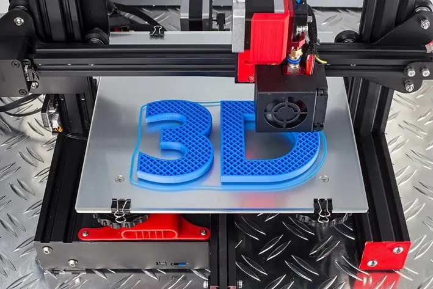

What Is 3D Printing?" – An introduction to the technology
Posted on: December 13, 2024
3D printing is a impressive technology that can create almost anything by building objects layer by layer. It’s exciting because it makes custom products like medical implants, car parts, and even food possible. It also helps the environment by reducing waste since materials are used only where needed. Overall, 3D printing feels like the future of manufacturing, making production faster, cheaper, and more creative.
Read the source article